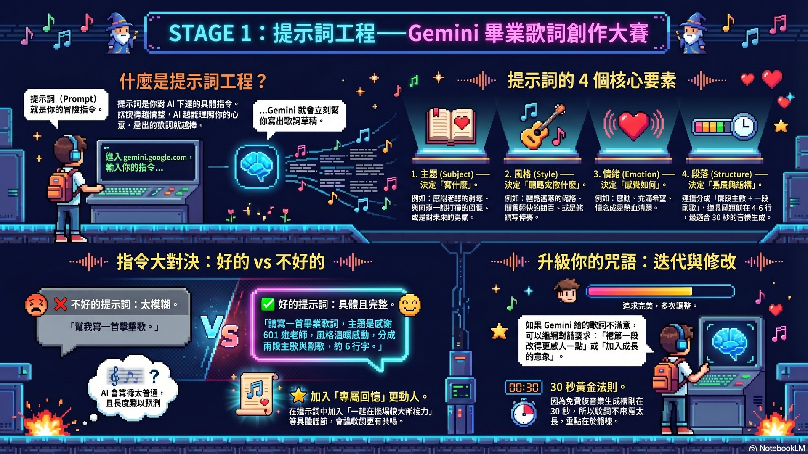
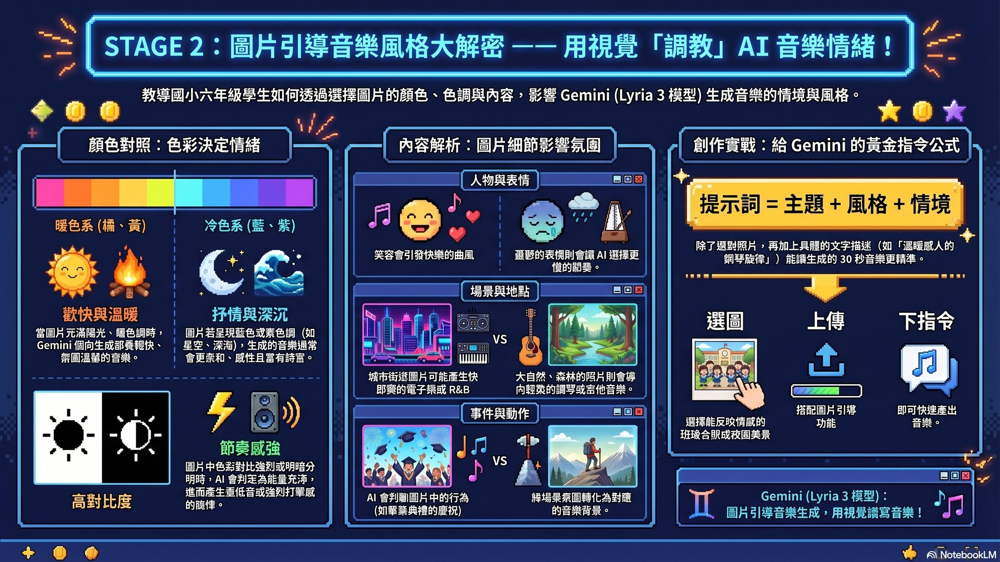
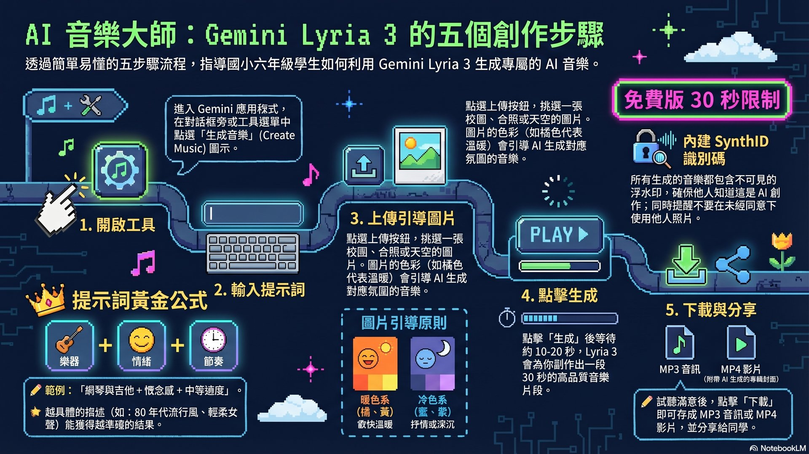
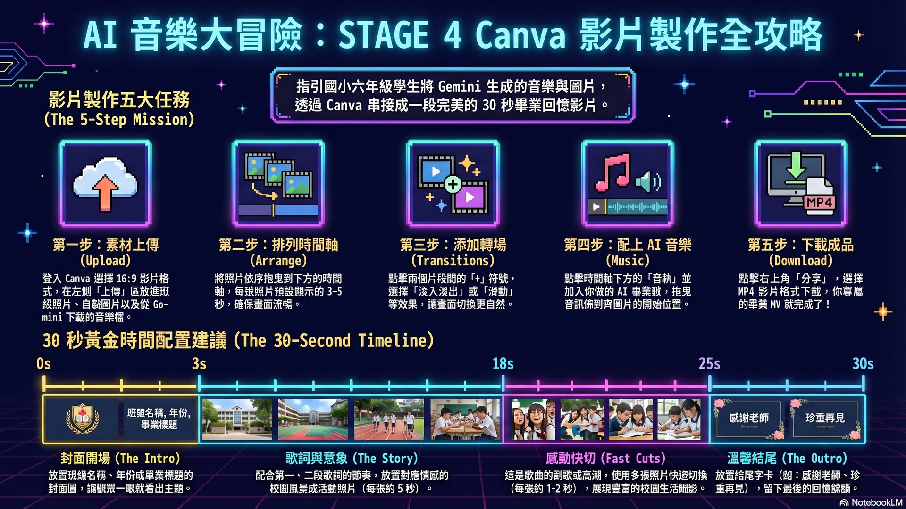
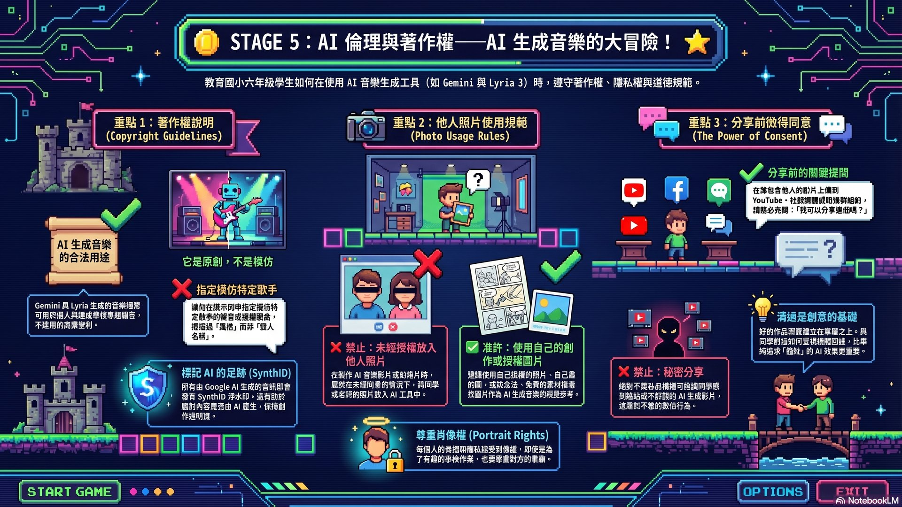
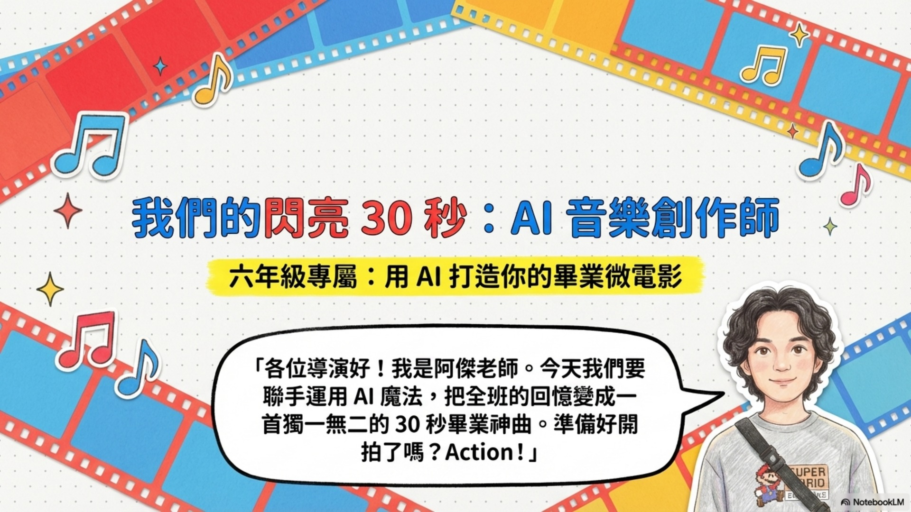

今天，你要成為 AI 音樂創作師！
用 Gemini 寫出你的畢業歌詞、讓 AI 幫你譜出 30 秒的專屬音樂，再放進 Canva 做成感人的畢業影片——全部你自己完成！
🎤 學會對 AI 下提示詞指令
🖼️ 用圖片引導音樂風格
🎵 掌握 Gemini Lyria 生成音樂
🎬 Canva 影片串接轉場
🔒 了解 AI 創作與著作權
STAGE 1
提示詞工程：讓 Gemini 寫出你的畢業歌詞
學習如何對 AI 下清楚的指令，生成專屬歌詞
▼
教師提示
先讓學生嘗試輸入簡單的提示詞（例如「寫一首歌」），觀察 Gemini 的回應，再引導他們加入更多細節。對比「模糊指令」和「精確指令」的結果，幫助學生體會提示詞的重要性。
操作步驟
- 1開啟瀏覽器，進入 gemini.google.com（使用學校 Google 帳號登入）
- 2在對話框輸入提示詞，例如：「請幫我寫一首畢業歌的歌詞，主題是感謝老師和同學，風格輕鬆溫暖，分成兩段主歌和一段副歌」
- 3閱讀 Gemini 回傳的歌詞草稿，看看符不符合你的想像
- 4繼續對話修改，例如：「把第一段改得更感人一點」 或 「副歌加入我們一起長大的意象」
- 5滿意後，複製歌詞備用（大約 4–6 行，配合 30 秒音樂長度）
提示詞黃金法則：主題 ＋ 風格 ＋ 情緒 ＋ 段落結構 四要素描述越具體，AI 結果越好！
互動練習：提示詞組合器
填入五個要素，組合出你的提示詞，試著讓 Gemini 寫出你想要的畢業歌詞！
（點擊「組合提示詞」按鈕，看看你的提示詞會長什麼樣子！）
⭐ 關卡評量
1. 下面哪個提示詞，最可能讓 Gemini 生成符合你期望的畢業歌詞？
2. 如果第一次生成的歌詞不符合你的想法，你應該怎麼做？
STAGE 2
圖片引導音樂：用視覺感染 AI
選擇圖片影響 Gemini 生成音樂的情緒風格
▼
教師提示
準備 3–4 張色調不同的圖片（例如：夕陽暖橘、冷藍天空、高對比黑白），讓學生猜猜上傳不同圖片後，Gemini 會生成什麼風格的音樂。可以實際示範操作讓學生看到差異。
操作步驟
- 1從你的照片中選一張能反映畢業情感的圖片（班級合照、校園、藍天）
- 2觀察圖片的色調：暖色系→歡快溫暖；冷色系→抒情深沉；高對比→節奏感強
- 3也可以先讓 Gemini 幫你畫一張圖：輸入「畫一張溫暖的國小畢業典禮插圖，藍天白雲，學生們快樂揮手」
- 4把選好的圖片儲存到電腦，等等上傳到 Gemini 生成音樂時使用
顏色＝情緒：想讓音樂更歡樂，選暖色調的圖片；想讓音樂更深情，選帶有藍色調或夕陽的圖片！
互動練習：圖片色調與音樂情緒對應
點擊色彩方塊，看看不同色調會帶出什麼音樂情緒！
⭐ 關卡評量
1. 如果你想生成一段「溫暖感動、充滿希望」的畢業音樂，最適合上傳哪種圖片？
2. 關於 Gemini 生成音樂的「圖片功能」，以下哪個說法是對的？
STAGE 3
Gemini Lyria：生成你的 30 秒專屬音樂
掌握 Lyria 3 完整操作流程，免費版每次生成 30 秒
▼
教師提示
先請學生上 gemini.google.com 找看看是否有音樂生成按鈕。如果找不到，請在對話框輸入「幫我生成音樂」。提醒學生：在歌詞前加上 Lyrics: 這個關鍵字，Gemini 才會把它唱出來！
操作步驟（5 步驟完成！）
- 1在 Gemini 對話框旁找到「生成音樂」工具，或直接輸入「幫我生成音樂」
- 2在提示詞框輸入音樂風格描述：「Lyrics: [你的歌詞] 溫暖感人的鋼琴旋律，輕柔童聲合唱，節奏輕快帶懷念感」
- 3點擊「上傳圖片」，上傳 STAGE 2 選好的圖片
- 4按下「生成」，等待 10–20 秒，然後播放試聽
- 5滿意後點「下載」儲存 .mp3 或 .wav 檔案到電腦
關鍵字訣：歌詞前記得加 Lyrics:！不想讓 AI 唱歌、只要背景音樂的話，加上「純器樂演奏」四個字！
互動練習：音樂風格切換模擬器
點擊不同的音樂風格，看看提示詞如何變化，感受不同風格的差異！
⭐ 關卡評量
1. 使用免費版 Gemini 生成音樂，每次最多可以生成幾秒的音樂？
2. 如果你想讓 Gemini 把你寫的歌詞配上旋律唱出來，你要在歌詞前面加上什麼關鍵字？
3. 如果你要求 AI「生成一首跟周杰倫一模一樣的歌」，結果通常會怎樣？
STAGE 4
Canva 影片串接：把音樂和圖片變成影片！
上傳音樂、排列圖片、加入轉場效果，輸出 MP4
▼
教師提示
讓學生先用 3–5 張圖片練習，不需要太多素材。重點在於讓他們學會：① 拖曳圖片到時間軸 ② 點選兩個片段中間的 + 號加轉場 ③ 上傳音樂並對齊。可以先做老師的示範版讓學生參考。
操作步驟
- 1登入 canva.com，點選「影片」→ 新增空白影片（16:9 比例）
- 2左側「上傳」→ 上傳照片，拖曳圖片到時間軸，每張約 3–5 秒
- 3點選兩張照片中間的「+」符號 → 選擇轉場效果（淡入淡出、滑動、圓形縮放）
- 4時間軸下方「+ 音訊」→ 上傳 Gemini 下載的音樂檔，拖曳對齊
- 5右上角「分享」→「下載」→ 選 MP4 格式 儲存
時間軸建議：0–3 秒封面 → 3–18 秒歌詞圖片（每段5秒）→ 18–25 秒快速切換 → 25–30 秒結尾字卡
互動練習：30 秒時間軸模擬器
點擊時間軸上的片段，查看建議內容；點「播放」看看時間流動的感覺！
⭐ 關卡評量
1. 在 Canva 中，要在兩個片段之間加入轉場效果，應該點哪裡？
2. 從 Canva 下載影片時，應該選擇哪種格式，才能在大多數裝置上播放？
STAGE 5
AI 倫理與著作權：負責任的創作者
了解 AI 生成音樂的版權規則，學習負責任地使用 AI
▼
教師提示
可以問學生：「如果你辛苦畫了一幅畫，有人把它改一下說是自己畫的，你有什麼感覺？」用這個問題引導他們思考版權的意義，再延伸到 AI 生成內容的使用規範。
三個重要原則
- 1Gemini 生成的音樂可以用在學校作業和個人用途，但不能拿去賣錢或假裝是「你自己創作」的原創音樂
- 2他人的照片未經同意不能放進影片（包括同學的照片），要先徵得本人同意
- 3分享影片前，告知影片中出現的所有人，並確認他們願意被公開
記住：你是「AI 的導演」，不是「AI 的複製機」。有創意的提示詞 ＋ 負責任的使用，才是真正的 AI 音樂創作師！
互動練習：AI 倫理判斷遊戲
讀完每個情境，判斷是「可以」還是「不行」，累積你的分數！
分數：0 / 0
⭐ 關卡評量
1. 用 Gemini 生成的音樂，下面哪種用法是合適的？
2. 在畢業影片裡放了班上 30 個同學的照片，分享到社群媒體前，你應該怎麼做？
授課簡報（阿凱老師版）

第 1 / 12 頁
今日實作任務：製作你的畢業音樂影片
TASK 01
用 Gemini 寫歌詞
輸入完整提示詞，生成 4–6 行畢業歌詞，修改到滿意為止
TASK 02
選擇或生成圖片
選 3–5 張圖片，或用 Gemini 生成，色調要符合歌詞情緒
TASK 03
生成 30 秒音樂
上傳歌詞（加 Lyrics:）和圖片，生成音樂並下載 mp3
TASK 04
Canva 串接影片
排列圖片、加轉場、放入音樂，下載 MP4 格式完成作品
TASK 05
分享與欣賞
班級互相觀賞作品，分享製作過程中最有趣的地方
NotebookLM 資源站
本頁面生成流程
深度研究
→
80 個來源匯入
→
NotebookLM 分析
→
Claude 生成駕駛艙
→
GitHub Pages 發布
常見問題 FAQ
為什麼我的 Gemini 沒有「生成音樂」按鈕？▼
Lyria 3 功能需要最新版 Gemini，請確認在 gemini.google.com 登入，瀏覽器已更新。如果找不到按鈕，可以直接在對話框輸入「幫我生成音樂」，通常就能喚醒音樂功能！
30 秒的音樂太短，可以讓它更長嗎？▼
免費版只能生成 30 秒。在 Canva 裡，可以把同一段音樂「循環播放（Loop）」，或生成 2–3 段不同的音樂片段，下載後在 Canva 裡依序串接在一起，就能變成更長的完整作品！
做出來的音樂聽起來很普通，不符合預期怎麼辦？▼
修改提示詞！用「黃金公式」：指定樂器（例如鋼琴、吉他）＋ 情緒（溫暖、感動）＋ 節奏（慢板、輕快）＋ 用途（畢業典禮背景音樂）。描述越具體，生成出來的音樂就越好！可以無限次重新生成哦。
我想做周杰倫風格的音樂，為什麼做出來很平淡？▼
Gemini 有版權保護機制，直接輸入歌手名字，AI 為了避免侵犯版權，會把結果變得很平淡！解決方法：不要寫名字，改成描述他的音樂特色。例如：不要寫「周杰倫的歌」，改寫成「融合中國風樂器與饒舌節奏的華語流行曲」，效果會好很多！
在 Canva 裡怎麼讓圖片和音樂對齊？▼
點選時間軸上的音訊條（橘色長條），可以左右拖曳對齊起始點；點選圖片片段的左右邊緣，可以拖曳調整顯示時間長短。建議先把音樂對齊到最開始，再調整每張圖片的長度來配合。
學生自學影片
延伸資源（教師模式）
- • Gemini Lyria 官方提示詞指南：Google Blog
- • NotebookLM 筆記本：開啟查看
- • 課綱連結：A-E-A1 科技素養、資訊系統、資訊科技與人類社會
- • 評量方式：作品完成度（影片輸出 50%）+ 過程記錄（25%）+ 同儕互評（25%）